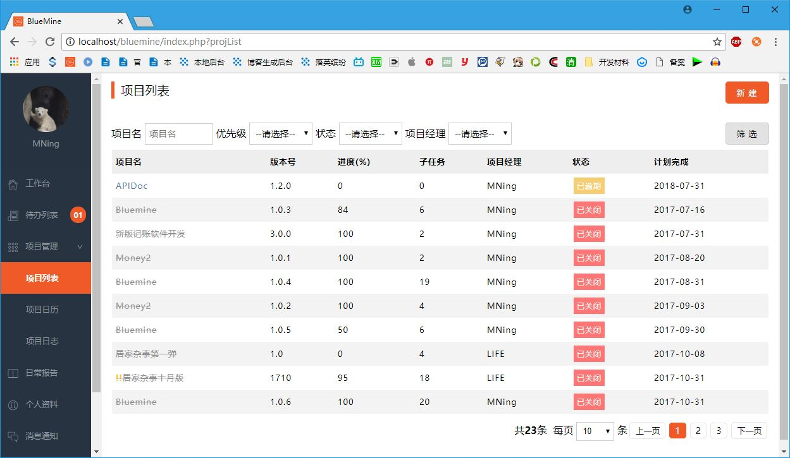
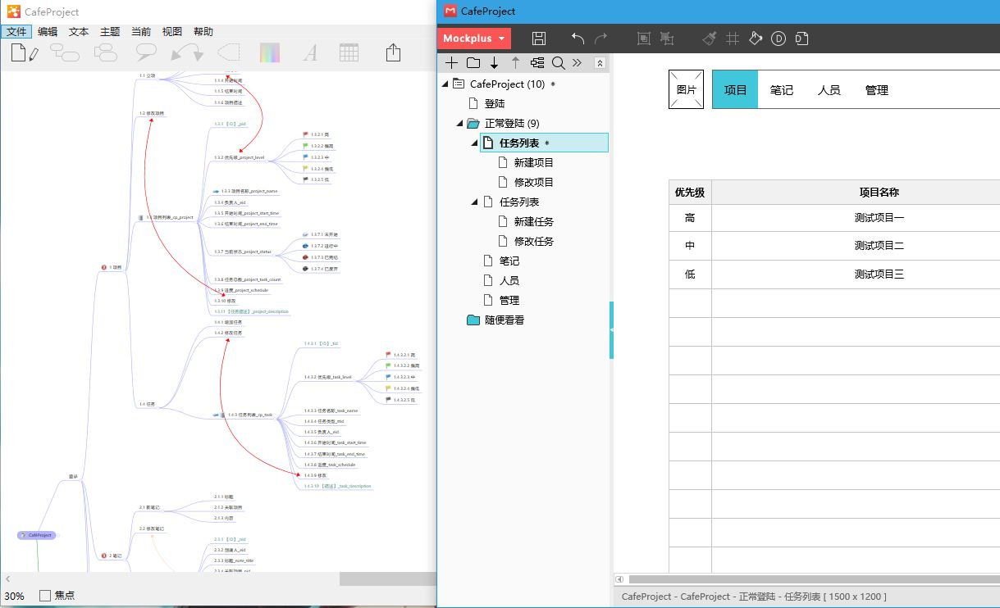

在前面的博客中提过，我自己做过一个项目管理工具来管理自己的业余项目和生活琐事。然而用了一年多，觉得它有点像一家公司的后台，虽然功能不多但我也觉得有点繁杂了。

于是我打算做减法，重新构建一个功能更少的，更生活化的管理工具。那么，业余项目的制作过程是怎样的呢？其实每个人的做法可能都有不同。我的做法其实和公司中是一样的，以下几步都要走一遍。
1、规划
这一步一般我会用思维导图梳理一下思路，仔细分析一下自己的需求。我到底需要什么，要达到什么目的。把要做的功能点以及他们之间的联系画出来。这一步确定好后，就可以确定数据库了。有几张表，几个字段，表间的关联关系也就清晰了。接下来画原型图。如果不想在后期的开发过程中给自己添堵，自己改自己产生的需求变更的话，前期规划一定要做好，原型图一定要画。哪怕不用软件，在纸上画一下也很有好处。因为它可以将你抽象的需求具体化，形象化。可能之前自己都没想到的问题，在画原型图时就能发现了。

原型图画好后可以尝试把任务分解一下，比如先做哪些模块或者页面；做完整个项目需要完成哪些模块；最后给自己制定个期限，画一张进度图。我自己通常需要2到3天来完成这些工作。
在公司中，这一步是由产品经理和项目经理来完成的。现在做得是自己的业余项目，就只能依靠自己了。但是千万不能省略。这是我的经验之谈，之前因为省略这一步吃过不少苦头。
2、执行与监控
前期的数据库已经分析好了，功能点和原型图也有了，并且都是自己画的，所以对需求的理解可谓“万分透彻”。接下来就开始干活了。技术选型可以自己把握。就像我前面的博客中说过的那样，自己的项目可以“皮一下”，用一用现在最新出的，自己还不会的技术，或者已经很成熟但自己在工作中没机会接触的技术。就当做学习练手了。将来使用熟练后没准可以反哺到工作中。为了保证自己能按时完成，锻炼一下自控能力，要尽量让自己按照规划时自己制定的工期来完成。
在公司中，这一步分别是由开发人员和项目经理来完成的。开发主管写代码，项目经理来监控工期。还是那句话，现在做得是业余项目，只有自己一个人，所以这些活必须得自己来完成。或许程序员会忽视“监控”这一环节(监控是贯穿始终的，虽然我写到了第2步中，但它其实从刚开始规划时就开始做了)。但是相信我，如果你不想让自己的项目烂尾的话，这一步绝对不能省略。
3、收尾
所谓收尾，包含两部分工作：
一、测试自己写的代码。这一步可以向公司的测试同学请教一下，也可借此机会学习一下测试；
二、对项目的总结。比如，在当初规划时，有哪些问题没有想到，为什么；开发过程中学到了哪些新的知识点；是否有可提取出来的代码块以方便以后直接使用；我对自己的工期估算是否准确（这也从侧面反应出对自己的能力认识是否客观准确）；我是否有延期，原因是什么。
在公司中，第一点是由测试的同学来完成的；第二点是由项目经理带领整个团队完成的。如果想从自己的业余项目中有所收获，建议把收尾工作的这两点都做好。不能省略。
或许您了解过PMP，发现上面的几个步骤正是PMP中五大过程组中的后四个。在我决定要做这个项目时，其实“启动”已经完成了，所以我就不写了。我管理自己的项目正是遵照这五个过程组来做的（但又不完全相同，这里不能太较真）。我一直认为，项目管理的知识不仅可以用于管理工作，也可以用来规范自己平时生活。毕竟生活中充满了项目。这一次我做的业务项目叫“CaféProject”，它现在处在规划阶段，我已经完成了前期的功能点和数据库的思维导图，现在正在画原型图。因为这部分工作我比较业余，所以大约在明天会把全部原型图画好。再接下来会出一张进度表。现在才刚刚开始，跟我一起一步步来完成这个业余项目吧。